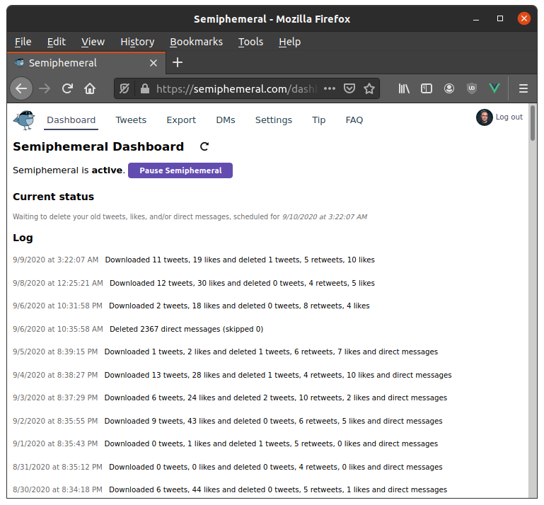
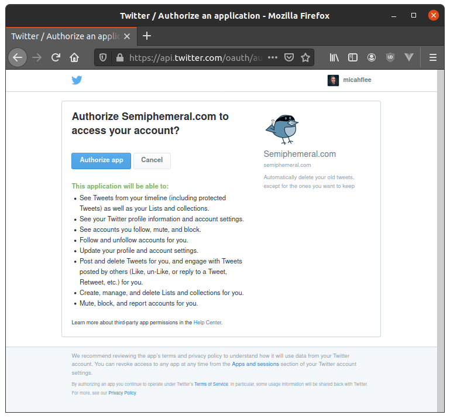
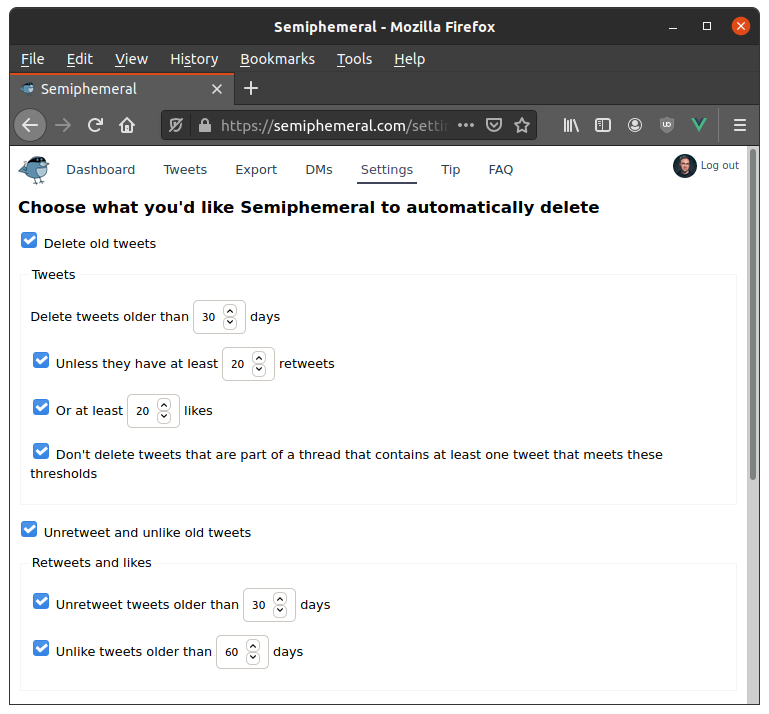
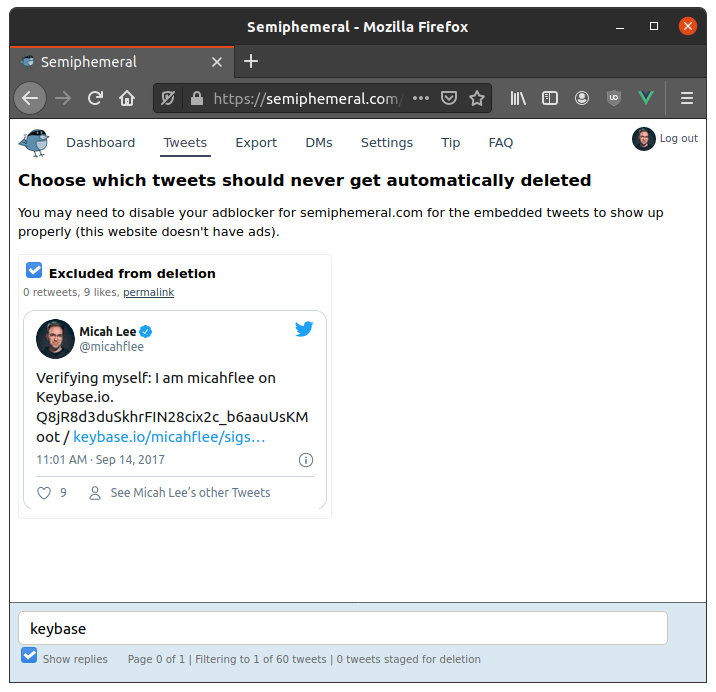
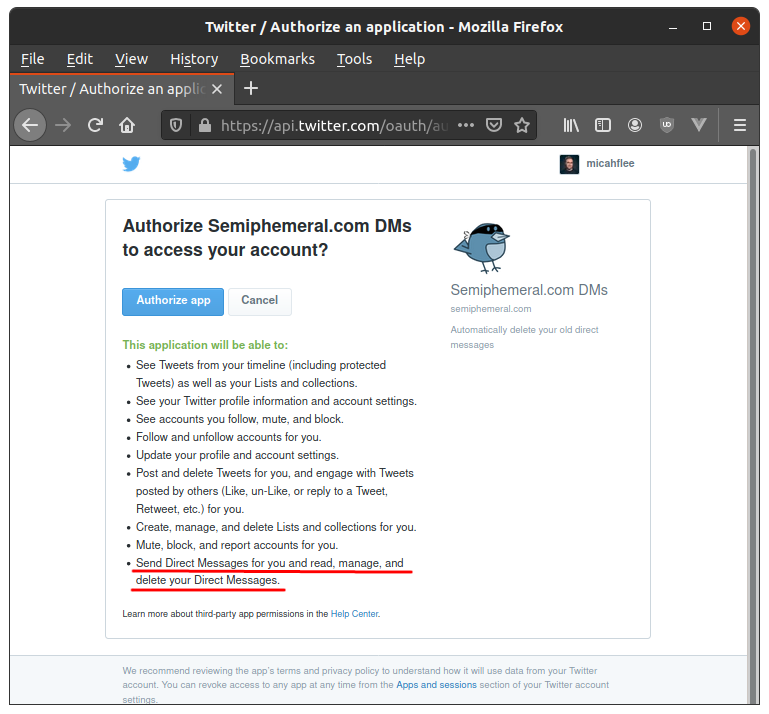

Easily automate deleting your old tweets, likes, and DMs with Semiphemeral
Roughly one hundred years ago, in June of 2019, I released an open source Twitter privacy tool called Semiphemeral that makes it simple-ish to delete years of old tweets. The great thing about Semiphemeral is, unlike similar tools, it's flexible: you don't have to delete all of your old tweets if you don't want to. You can, say, choose to keep tweets that have at least 20 likes, flag specific tweets you want to never delete, or delete all your retweets and likes that are older than a week.
But at the time, Semiphemeral was only usable by the nerdiest among us. It required running commands in a terminal window, creating your own Twitter API key, and, if you want to automate it, setting up a cron job on a server. But this is no longer the case!
For the last several months I've been running an easy-to-use hosted version at Semiphemeral.com. Now anyone* can easily delete their old tweets, likes, and now even direct messages (more on this below).

Semiphemeral is an antifascist service
*Well, most people.
In order to use Semiphemeral, you must follow @semiphemeral on Twitter. Supporters of dictators and anti-democratic demagogues, racists, or other types of fascists will be blocked, and blocked users are ineligible to use Semiphemeral. Everyone deserves privacy on social media, but not everyone is entitled to get that privacy by using this free service.
How does fascist detection work? Right now it's fairly simple. Semiphemeral maintains a list of popular fascist Twitter influencers: extremist demagogues like Trump in the US, Bolsonaro in Brazil, or Modi in India; popular neo-Nazi media personalities like Tucker Carlson or Ben Shapiro; and others.
When you start using Semiphemeral it downloads a history of your tweets and likes. If you've liked tweets from any of those fascists within the last few months, you get automatically blocked and are disqualified from using the service (it automatically unblocks you in a few months, in case you've changed since then).
This algorithm is prone to false positives, of course. Many perfectly reasonable people have at one point liked a Trump tweet, for whatever reason. So if you get blocked and you've only liked a few fascist tweets, Semiphemeral will let you unblock yourself and continue using the service. But if you've demonstrated a clear pattern of liking what fascists are spewing on Twitter, you have to write an email if you want to appeal your block.
Getting started
Using the hosted Semiphemeral service is easy. Just go to https://semiphemeral.com/ and click "Login with Twitter". This will ask you to give Semiphemeral.com permission to delete your tweets and likes.

As soon as you create your account, Semiphemeral starts downloading a history of your tweets. Depending on how long you've been using Twitter, this may take a long time. Twitter enforces rate limits, which means Semiphemeral will frequently have to stop and wait 15 minutes before it can continue.
In the meantime, you can go over to the Settings page and configure it exactly as you like. Here's how mine is configured:
- Delete tweets older than 30 days unless they have at least 20 retweets or at least 20 likes, and don't delete tweets that are part of a thread that contains at least one tweet that meets these thresholds
- Unretweet tweets older than 30 days and unlike tweets older than 60 days
- Delete direct messages older than 14 days

When it's done downloading your Twitter history, @semiphemeral will send you a Twitter direct message letting you know.
The next step is to go to the Tweets tab. This will show you all of the tweets that don't fit your criteria in Settings, and you can optionally exclude any of them from deletion. For example, Semiphemeral won't delete the tweet that verifies myself on the messaging app Keybase:

After you've chosen the settings you want and chosen which tweets to manually exclude, you can go back to the Dashboard and click the "Start Semiphemeral" button. From this point on, once a day Semiphemeral will download your latest Twitter history and delete the older stuff based on your settings.
Deleting direct messages
Semiphemeral can also delete your old DMs, basically making them ephemeral (although keep in mind that when you delete a DM, the person you sent it to can still read it unless they delete it too).
When you first login to Semiphemeral, you give the app permission to delete your tweets but it doesn't have access to your DMs. If you want it to delete them, first you must give it access. You can find a link to authorize Semiphemeral to access your DMs on the Settings page under "Direct messages". This time you have to agree to an additional privilege.

There's another catch. Twitter only tells Semiphemeral about the last 30 days of your DMs. Because of this, Semiphemeral can't automatically delete all your old DMs, only those within the last 30 days. For example, if you configure it to delete DMs older than 7 days, each time it runs it will delete the DMs between 30 days ago and 7 days ago.
But if you have years and years of DMs you want to destroy, don't worry. You can still bulk delete them, you just need to give Semiphemeral a list of them. If you go to the DMs tab there's instructions on how to do this. But in short, you need to download a copy of your Twitter archive and them upload files that contain all of your historical DM metadata to Semiphemeral, and then it can delete all your older ones.
Semiphemeral.com doesn't track you
You can see Semiphemeral's extremely short and readable privacy policy here, but the TLDR is: The service doesn't use any analytics software or log IP addresses, and there are no ads. It temporarily saves the content of your tweets, but then deletes that content when it deletes those tweets. It never accesses the content of your DMs.
It's hosted on the US-based cloud hosting provider DigitalOcean, and uses Stripe to process optional credit card tips.
Paid for by tips
Semiphemeral is totally free to use. I coded it in my spare time basically just because I wanted to use it myself. At the moment it's costing me roughly $60/month to pay for hosting (and if it gets considerably more popular, that amount will increase as well).
If you <3 Semiphemeral you can help me offset these costs by tipping (you can do this from the Tip tab when you're logged in), which is greatly appreciated.